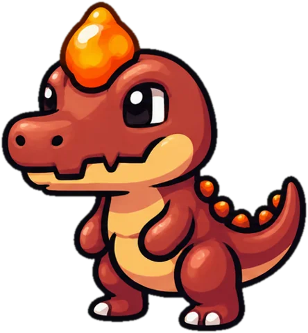

 FireEarth
FireEarthTap a stage to read its story.
Magmite is a compact upright lizard with coppery-red scales and a small orange flame-crest on its head - just one pointed tuft, like a candle it was born carrying. It stands on two legs in the midday heat of Sand Dunes, tail dragging for balance, and watches the dunes with steady deliberate eyes. It investigates everything by licking it once, deciding in three seconds if it is useful or not, then moving on. Guardians who travel the dunes always find Magmite waiting at the water-holes, having found them first.
Field note: Magmite's flame-crest grows taller the warmer its environment - in cool shade it is barely a flicker, in full sun it stands tall as its ear.
Sand Dunes. Magmite and its family are found in the Sand Dunes. See everyone who lives there.
Share a Bond Food that matches its types to become friends. Magmite loves:
A Bond Food is not a trick. It joins your spirit with the Kimuro's spirit, and only when it chooses you.
Print the Kimuro adventure packs: mazes, cards, a board game and Bond Mark medals.
See the printable packs